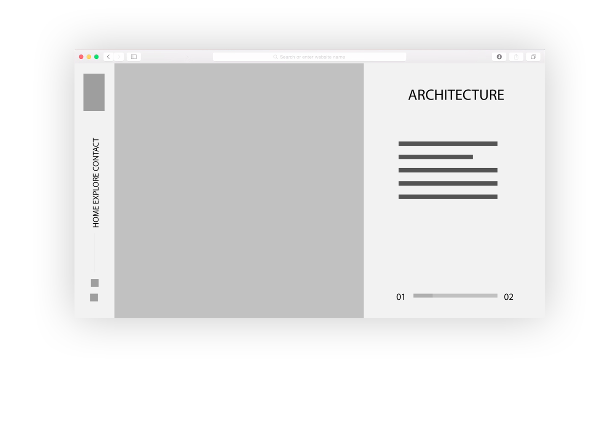
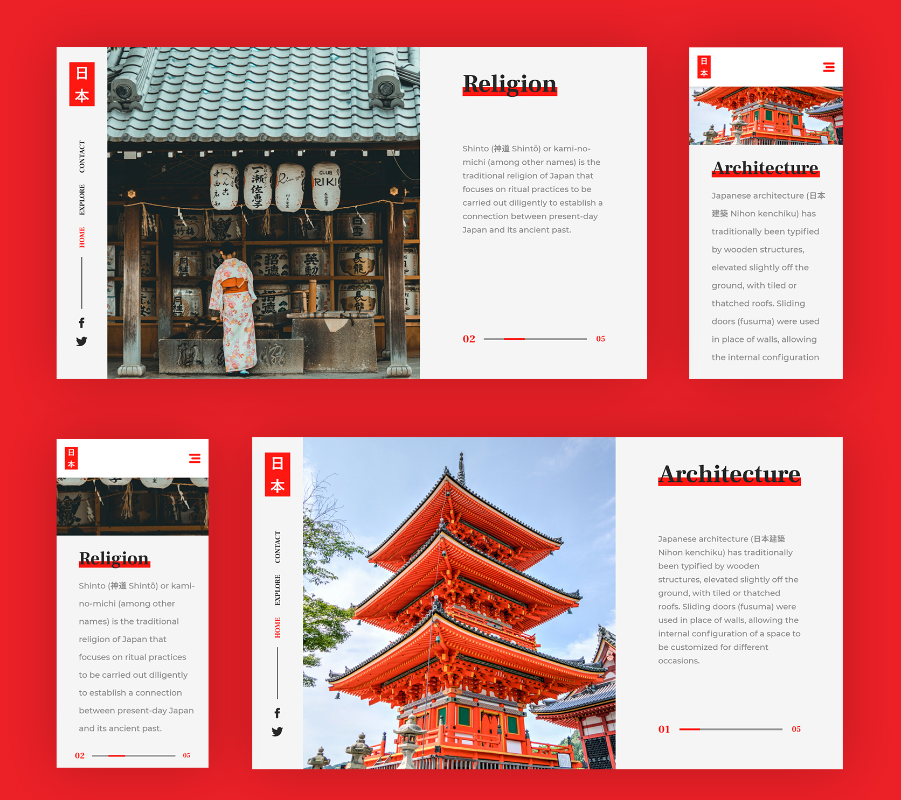

Japan
Japan was always one of my favorite countries. The way this country developed from both technological and social aspects, while keeping its traditions and culture alive, impressed me such that I decided to create a project based on it. I selected some of the things I believed that would describe Japan the best and put them together in two pages. Furthermore, an important point was trying to highlight the unique architecture and culture of the place. The goal was to present a bit of Japan’s beauty in a modern style that would attract both the young and the elders, to put Japan in a different light.
When I started this project I had in mind two important questions: How will I map the content for the two pages?
How will I ensure a simple and usable experience on every screen?
For the first I layed the content in such manner that it would be easy to understand. For changing from Architecture to Religion I used a “carousel” type of slider, that goes through every page of the website.
The second question was answered when I started sketching, I layed the content in such way that going from Desktop to Mobile wouldn’t cut out the content.
Wireframing was the part when the website was pretty much done in my head, I knew where I want all the elements to be and I tried to show that while doing the wireframe.
As for the final design, I had to make some choices, from what font to use, what colors would fit the best to choosing pictures that would have an impact on the viewer.
